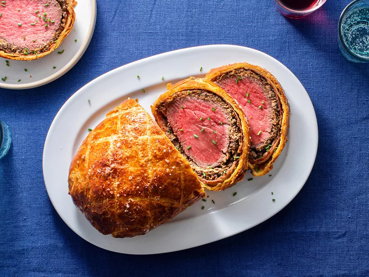

Ultimate Beef Wellington

Beef tenderloin, a rich mushroom duxelles, foie gras, and prosciutto, all wrapped in a buttery puff pastry crust.
The prime rib might be the king of the holiday table, but if I had to nominate one roast for the triple threat of Dictator-For-Life, President, and First Tiger, it'd be the beef Wellington. Surely, there is no more decadent roast in the history of the post-Roman canon.
The origin of the dish is not exactly known, and there's not much primary research I can add to the wealth of theories that aren't already aptly covered by the Wikipedia article on the subject (tl;dr it might be named after the 1st Duke of Wellington, it might be a patriotic English name for a French dish, it might be named after a pair of shoes, or it may be from the land of Hobbits and Nelwyns). But we're not after pedagogical discussions of origin or etymology. We're interested in one thing, and one thing only: deliciousness.
There's no doubt that beef Wellington is delicious. How can it not be? The exterior is a light, crisp, buttery crust, glazed a deep, shiny golden brown, twinkling with crystals of sea salt. You slice through it to reveal layers of some of the finest ingredients in the Western world: slivers of prosciutto, a duxelles of wild mushrooms bound with cream, and finally foie gras, all encasing a core of medium-rare, buttery-soft beef tenderloin.
As the be-all-end-all to decadent roasts and as an absolute classic, is there really much we can do by way of improving the recipe? What exactly is there left to explore?
Well not all recipes need overhauls. Sometimes, a few tweaks here and there to bring out the best in each ingredient is all it takes. Let's go through the Wellington from the outside in.
Ingredients
- 1 center-cut beef tenderloin, trimmed of silverskin and fat, about 2 pounds (see note)
- Kosher salt and freshly ground black pepper
- 2 tablespoons plus 1/2 teaspoon vegetable or canola oil, divided
- 2 tablespoons prepared horseradish
- 1 tablespoon Dijon, spicy brown, or hot English mustard
- 1 pound mushrooms (button, cremini, shiitake, portabello, or a mix) cleaned, trimmed, and roughly chopped
- 4 tablespoons unsalted butter
- 2 medium shallots, finely diced (about 1/2 cup)
- 2 teaspoons finely minced fresh thyme leaves
- 1/2 cup Cognac or other brandy or barrel-aged spirit, such as bourbon
- 1/2 cup heavy cream
- 2 teaspoons soy sauce
- 4 ounces fresh foie gras (about two 1/2-inch slabs, see note)
- 1 sheet phyllo dough
- 1/4 pound prosciutto, sliced paper thin
- Flour, for dusting
- 14 ounces frozen or homemade puff pastry, thawed (see note)
- 1 egg, beaten
- Coarse sea salt, such as Maldon or fleur de sel
- 1 bunch finely minced chives
Steps
- Using butcher's twine, tie tenderloin at 1-inch intervals. Trim ends of twine. Season liberally with salt and pepper.
- Heat 2 tablespoons oil in a cast iron or stainless steel skillet over high heat until smoking. Add tenderloin and cook without moving until well-browned on first side, about 2 minutes. Rotate tenderloin and continue cooking until browned on all sides, about 10 minutes total. Transfer to a large plate.
- Combine horseradish, mustard, and 1 teaspoon black pepper in a small bowl. When tenderloin is cool enough to handle, cut off and discard twine, then rub on all surfaces with horseradish/mustard mixture. Place in refrigerator, uncovered.
- Place half the mushrooms in the bowl of a food processor and pulse until very finely chopped, scraping down sides and redistributing mushrooms with spatula as necessary, about 10 short pulses. Transfer to a bowl. Repeat with remaining mushrooms.
- Heat butter in a 12-inch skillet over medium-high heat until melted. Add mushrooms and cook, stirring occasionally, until mushrooms have exuded all their liquid and start to sizzle, about 8 minutes. Continue cooking until mushrooms begin to brown and leave browned bits stuck to bottom of pan, about 4 minutes longer. Add shallots and thyme and cook, stirring frequently, until softened, about 2 minutes.
- Add brandy. Scrape bottom of skillet with a silicone spatula or wooden spoon to release browned bits. Continue to cook until brandy is nearly dry, about 4 minutes. Add heavy cream and soy sauce and continue to cook, stirring frequently until mixture is thick and collects in one large mass when you shake the skillet. Season to taste with salt and pepper. Transfer to a bowl and place in the refrigerator.
- Season foie gras liberally with salt and pepper. Heat remaining half teaspoon oil in a small cast iron or stainless steel skillet over high heat until smoking. Add foie gras and cook without moving until well browned on first side, about 30 seconds. Carefully flip with a small offset spatula and brown second side, about 30 seconds longer. Transfer foie gras to a paper towel-lined plate. Pour rendered fat into mushroom mixture, stir to combine, and return to refrigerator. Use a sharp knife to split each piece of cooked foie gras in half horizontally. Transfer to a plate and place in refrigerator. Allow all ingredients to chill for at least 30 minutes.
- Lay a double layer of plastic wrap about 2 feet long and 1 foot wide on a cutting board. Lay phyllo dough on top of plastic wrap. Shingle prosciutto on top of phyllo to create a thin, even, overlapping layer, leaving a 2-inch border along the bottom and top of the phyllo dough. Spread mushroom mixture evenly over ham layer.
- Place tenderloin along the very bottom edge of the ham/mushroom layer. Place sliced foie gras evenly over top of tenderloin (see note). Carefully roll tenderloin in mushroom, ham, and phyllo, using the plastic wrap to help tighten it as you roll. Once beef is completely rolled up, re-wrap with more plastic wrap, twisting the ends to make sure roll is very tight. Return to refrigerator for at least 30 minutes.
- Dust board or countertop lightly with flour. Spread puff pastry on board and, using a rolling pin, roll it into a rectangle at least 4 inches wider than the beef roll on its shorter side.
- Unwrap beef roll and place along very bottom edge of puff pastry with the foie gras side facing up. Brush 6 inches of puff pastry just above beef roll with beaten egg. Carefully roll the beef in the puff pastry until it is completely wrapped. You should end up with the foie gras-side facing up again, with the puff pastry seam meeting on the bottom. Trim pastry with a sharp knife.
- Fold sides of puff pastry protruding from either end of the beef roll towards the center, then fold the top flaps down. Trim off the bottom flaps carefully.
- Roll entire beef roll over so that the bottom is facing up, then fold up the end flaps to seal completely. Roll beef back right-side up. Transfer to a plate and chill for at least 30 minutes.
- Adjust oven rack to center position and preheat oven to 425°F (218°C). Transfer Wellington to a foil-lined baking sheet and brush all over with beaten egg. Use a sharp paring knife to score a decorative pattern in the pastry. Sprinkle liberally with coarse sea salt. Bake until pastry is golden brown and center of roast registers 110°F (43°C) for rare or 120°F (49°C) for medium-rare on an instant-read thermometer, 35 to 45 minutes. Remove from oven and allow to rest for ten minutes.
- Use a thin metal spatula to loosen Wellington from foil, then carefully transfer to a carving board. Slice off the ends with a sharp knife. Carve Wellington, sprinkle cut surfaces with chives and more coarse salt, and serve.
God Speed